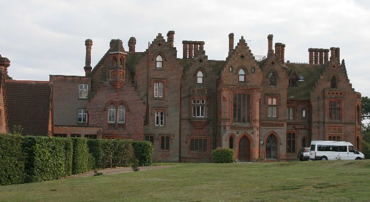
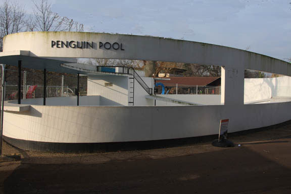
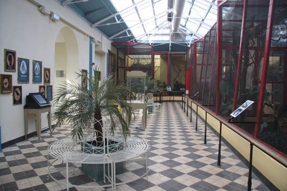
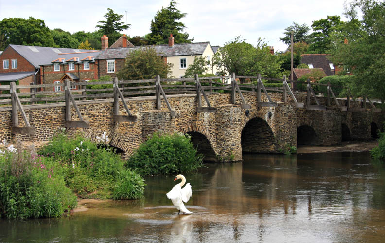
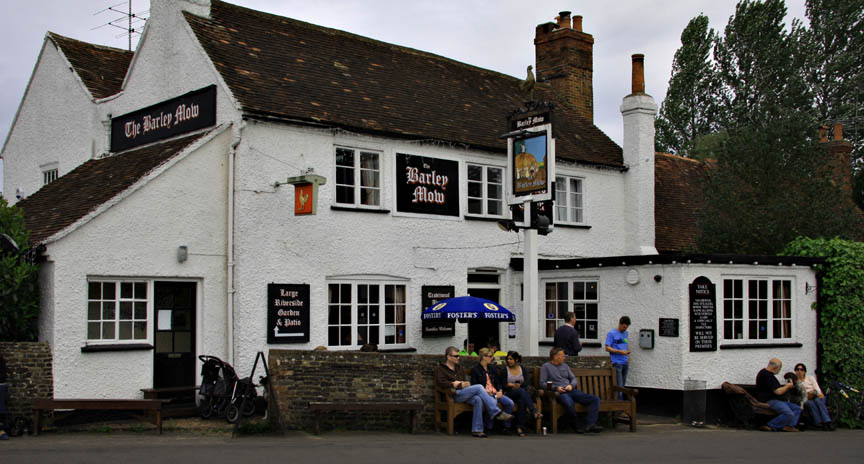

Chenies Manor House in Buckinghamshire was used for the 'Mayfield' residence. It was also used for the 2008 BBC adaption of Little Dorritt.

Poirot meets Lady Margaret Mayfield by the Penguin Pool at London Zoo.

They also stroll through the Bird House together.

Poirot & Hastings drive through Tilford whilst chasing Mrs. Vanderlyn.

They also drive past 'The Barley Mow' on Tilford Green.